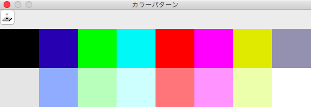

The Color-pattern Window
This window work that manage the color pattern of currend document.

A color pattern instead of color selection, which is registered a part of layer(or whole layer) as pattern.
The feature of color pattern is like 'Stamp tool'.(However, precise usage is completely different from each other.)
The number of color pattern is 16. Each documents contain the color patterns.(Distinct from the pen-style and the tile-pattern, the color pattern is not shared in the PoCo.app.)
Register a color pattern
At first make selection area on the main window, and select the color pattern number, then click button.
Please note the registered pattern is always taken rectangle shape whatever selection shape is free style.